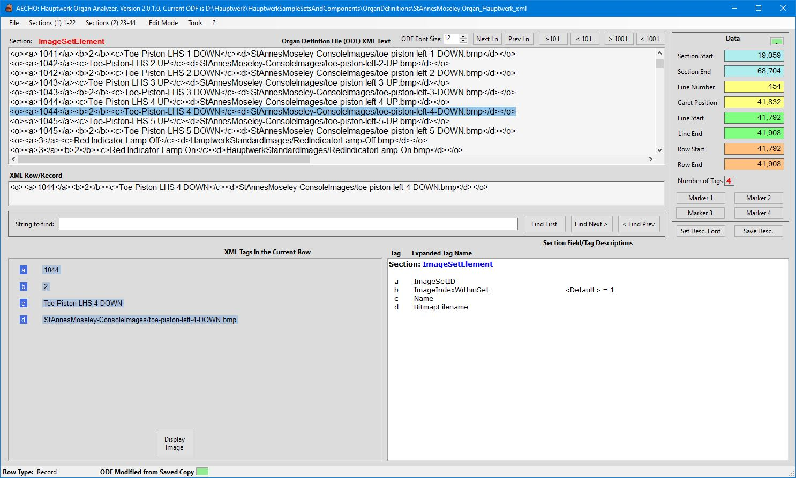

AECHO V2 Help - Background Info
<Return to Help's Home Page>
Hauptwerk® instruments are comprised of numerous resources:
individual sounds (Samples), numerous images, and very importantly,
the ODF (Organ Definition Format/File), a formatted file that
instructs HW how to marshal those resources into a functioning
virtual instrument. The ODF contains encoded information defining
all the instrument's behaviors, its on-screen presentations,
all of its controls and their operation, how sound is processed and
presented...: every detail of the instrument.
Purveyors of HW instruments sometimes encrypt their ODFs prior to
distribution: the information in these encrypted ODFs is protected
by HW, and is not readable by AECHO, or by other common file
editors.
However, many ODFs are distributed in a non-encrypted form, which
can be read and edited by a human (at least, theoretically) using
any common text editor, such as Notepad++. Internally, these files
are encoded in XML (eXtensible Markup Language), a
technology-industry standard for exchanging structured data in a
self-defining, human-readable, technology-independent way. To learn more about
XML, click here. A key concept in XML is that data is enclosed
between pairs of markup "Tags", where the Tags help identify the
meaning and purpose of the data item, and its relationship to other
data.
These non-encrypted ODFs come in two forms:
- Full-ODF - contains expanded, meaningful, human-readable Tags,
and includes representations of all data "Fields" within data
"Records", even when those Fields are set to their HW-defined
default values. For example, a Field in a Full-ODF might be
represented by the XML-snippet:
<InstallationPackageID>1234</InstallationPackageID>
- Compiled/Compressed-ODF - a highly compressed form, which
substitutes 1-2 character short alphabetic Names e.g.,
"<d>...</d>" or "<a1>...</a1>", for the
longer meaningful Tag-Names of the Full-ODF. Compressed-ODFs do
not contain explicit Fields/Tags at all for Fields whose values
are set to their HW defaults. This compression greatly reduces
the size of the ODF, and increases the speed with which it can
be read and written. However, this comes at the expense of human
understandability, as the Tag-Names carry no obvious meaning.
For example, the prior Full-ODF Tag seen in the example above
might appear in a Compressed-ODF as:
<c>1234</c>
Why "<c>"? Probably at the time the correspondence was
first defined in HW, this Tag was the third element of its
Record. As newer versions of the ODF specification are
implemented, some older Fields may be deprecated, while other
newer Fields are added. Over time, these modifications can lead
to gaps in the sequence of short-names, and sometimes to breaks
in their alphabetical ordering: Over time, the current
(hypothetical) ordering of Fields within a Record-Type might
change from "<a> <b> <c> <d> <e>
<f>" to "<a> <b> <d> <g> <h>
<e> <f>", "<c>" having been retired, while
"<g>" and "<h>" were added.
Most instruments are distributed with their ODFs in this
compressed form, and are therefore mostly opaque to the casual
user. Professional and semi-pro instrument developers have access
to a set of extended tools that allow the ODF data to be
exported/imported in its Full form, and/or written to a database
in a transparently equivalent format. However, the average casual
user often does not have access to these tools. HW does provide a
native facility called "Custom Organ Design Module" (CODM) for
creating and editing simpler instruments. CODM operates on a
simplified and reduced subset of the complete ODF specification,
but does not implement the Full-ODF specification, and is not
suitable for managing professionally created ODFs.
AECHO partly fills in this gap between CODM and the Full-ODF
specification: it can open and interpret Compiled/Compressed
(non-encrypted!) ODFs, showing the user the correspondence between
the compressed Tags and their long-form Full-ODF counterparts. It
also allows for simple editing of this type of ODF. The screen-shot
below shows an example, taken from HW's St. Anne's Moseley ODF. The
large scrollable display area near the top-center of the screen is
showing the text of the St. Anne's ODF as distributed.
A particular line from this ODF has been selected (by a mouse
double-click), which has extracted the entire content of the XML
Record into the smaller display area titled "XML Row/Record".
AECHO defines a Row as a complete XML statement: most importantly,
the content bounded between a start/end pair of
"<o>...</o>" Tags, which may be comprised of many lines
of text. These Rows correspond closely to the concept of a database
Record, with the database Table corresponding to the ODF Section,
"ImageSetElement" in this demonstration. The Tags between the
bounding "<o>...</o>" ("a", "b", "c", and "d")
correspond to database Fields in this Record. AECHO has recognized
the Section we have positioned into ("ImageSetElement"),
extracted the selected Row (Record), and loaded the long-form
description of this record-type into the display area on the
bottom-right, including the information that the Tag "<b>"
would have a default value of "1", where it not explicitly present
in this Record. On the bottom-left side of the window, AECHO has
separated the Record into its Fields, showing each Fields's
compressed-form Name alongside its Value. As this Row references an
Image resource, AECHO is showing the Display Image
button that would retrieve and display that Image on the screen, if
the user wished to see it.
AECHO is also showing position information about the selected
Row/Line/Character: where its Parent Section begins and end in the
file; the Line number; the current Cursor/Caret position; where the
Line begins and ends; where the Row (same as the Line, in this
example) begins and ends; how many unique Tags/Fields ("4") are
present in this Record.
AECHO provides several navigation tools, including text searches in
either direction. Continuing searches can be performed from the
point of the last successful search, or from any other point in the
ODF by single-clicking at that point before doing a Find Next or Find Prev.
AECHO also allows positioning by advancing or retreating a line at a
time, 10 lines at a time, or 100 lines at a time. Clicking on any
one of the eight colored Position-Data fields immediately moves the
Cursor/Caret to that point in the ODF.
The user can set up to four Markers, by right-clicking one
of the Marker
x buttons, which will then associate the current Line
with that Marker. Left-clicking an assigned Marker
relocates to that point in the ODF. Any of the 44 defined ODF
Sections can be directly accessed by selecting the desired Section
from one of the two Sections pull-down menus found on the
Menu-Bar.
AECHO provides two support tools that open in their own windows: a
tool to translate back-and-forth between ODF Coupler-Codes and their
natural-language descriptions; a tool to Trace a (sound) Sample
Record, extracting all its Fields and following links to other
Section-Records that are connected to the Sample, fully expanding
their Field content also. This Trace function is also accessible
from the main window: when the ODF is positioned to a Sample record,
AECHO displays the Trace Sample button, that can perform a
Trace on the selected Record.
AECHO's main form, with the St. Anne's Moseley ODF loaded, and an
Image Record selected:

|
ODF of St. Anne's Moseley
|